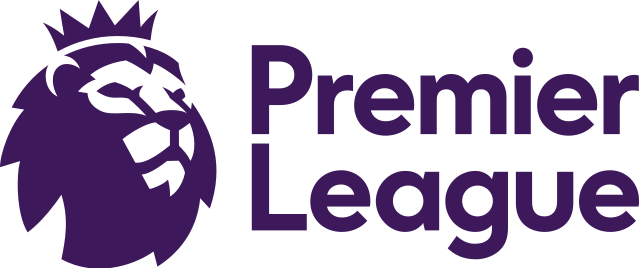

English Premier
League Analytics
This project involved using sports reference data between 2017-2022 to explore player and team statistics. The data was first saved to a local psql database, and then accessed directly within power BI to build four dashboards: top performing teams, top players, team/opponent performance, and player/team stats.

This project involved analyzing a large set of retail data, with the goal being to determine the best company to acquire based soley on the sale of shoes. I created a Power BI dashboard to visualize the companies with desirable characteristics.

This project served as an exploration of the spotify API and was initially just an attempt to sort my own liked spotify songs into playlists. I am currently working on turning this project into a working app hosted on a web server.
This project was in collaboration with the University of Georgia's Center for Geospatial Research as part of a statistical capstone project. Given GPS tracking data for ~15 elephants in Zimbabwe, the goal of the project was to try and understand bull elephant movement so as to predict encroachment into the city of Victoria Falls.